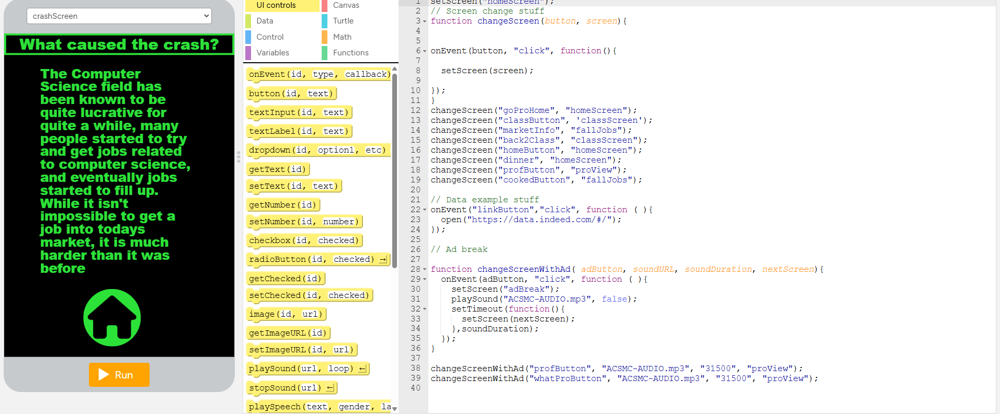

Greetings, My name is Eamon Perez, and I am studying Computer Science and AP Capstone at Old Rochester Regional High School. This page is my portfolio, one that I've decided to make from scratch rather than using a visual website builder. I did this to further my strengths in web development, but using an app like Wix would have been better for me if I had less time. In my AP Capstone research, I prefer to research the effects of humans on the environment, and the effects of what humans have made on themselves. My proudest work, being me IMP for performance task2, had me researching the effects of AI companions on their users, and how they interact with the world. Aside from doing my programming school work for APCSA, I am a hobbiest game developer in my free time. The picture on the left is a picture of some of one of my earliest applications, made using code.org. This website was originally made using IntelliJ idea, but troubles arose when attempting to deploy, forcing me to switch the platform to Code.org's web lab, which allows me to bring the site to the web.